其他
其他
AI 每日新聞彙整
其他
全部主題
其他
4 家媒體報導judgeanthropicpentagon
Anthropic gets its first court win over the Pentagon’s supply-chain risk label
A federal judge ruled the Trump administration illegally labeled Anthropic a supply-chain risk, handing the AI company a victory as its second Pentagon lawsuit continues in Washington.
- Ars Technica AI Trump blacklisting of "woke" Anthropic deemed illegal by federal judge
- TechCrunch AI Anthropic gets its first court win over the Pentagon’s supply-chain risk label
- The Verge AI Anthropic was illegally blacklisted by the Trump administration, court rules
- Wired AI A Judge Has Blocked the Pentagon’s Attempt to Blacklist Anthropic
3 家媒體報導notebookgeminigoogle
Gemini Notebook 加入專家智慧，首波 10 萬本電子書做資料來源
Google 展開一項跨 Google AI 產品的計畫，協助使用者透過 Google AI 產品與可信任來源 […]
3 家媒體報導openaimicrosoftgoogle
OpenAI、Anthropic 等逾百家企業聯合示警：AI 網攻門檻大降，防禦只剩數月
《Reuters》報導，包括 OpenAI、Anthropic、微軟、Alphabet 與亞馬遜在內的科技巨頭，警告 AI 技術快速進步，正降低駭客發動複雜網路攻擊的門檻，企業與政府只剩數個月時間可以準備。 聯合公開信獲 Broadcom、Capital One、Cloudflare、CrowdStrike、General Motors、IBM、Mastercard、Oracle、Robinhood、Shopify 與 Visa 等逾 100 家企業共同簽署，呼籲各界立即強化網路防禦，尤其是醫院、供水系統等關鍵基礎設施。 從修補漏洞到開放最強模型：公開信
2 家媒體報導transcribe3.5gemini
Google發表Gemini 3.5 Transcribe語音轉文字模型，產出逐字稿時間大幅縮短70%
Google發表Gemini 3.5 Transcribe語音模型，支援自動刪除贅詞與語意修正。串流字錯率僅4%，產稿速度較前代提升7成。
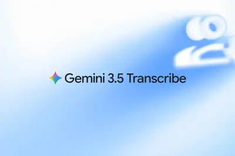
2 家媒體報導datacentercentersdata
Inside Meta’s Push to Put Robots to Work in Data Centers
The company is testing robots that can swap cables, reset servers, and take on other tasks performed by technicians, fueling concerns among some workers that their jobs could be at risk.

2 家媒體報導mhsanthropicagent
Anthropic 向實體設備出手：推 MHS 要讓 AI Agent 更容易跨設備操作
AI Agent（AI 代理）已經能寫程式、規劃實驗，甚至連續工作數小時，但當它真的走進實驗室或工廠進一步控制器材時，可能會遇到設備來自不同廠商，各有不同控制介面、軟體與資料格式等問題。AI Agent 就算知道下一步怎麼做，也未必有一致的方法將指令送到每一台設備，而整合這些硬體往往需要花上數週甚至數月的時間。 Anthropic 在美國時間 8/27 發表「模型硬體標準（MHS, Model Hardware Standard）」的研究預覽版，正是要解決這個問題，並宣稱能將整合工作縮短至數小時甚至數分鐘。究竟 MHS 做到了什麼，進而能縮短整合時間呢？
- iThome Anthropic推出模型硬體標準，讓AI代理直接操作實驗室與製造設備
- TechOrange 科技報橘 Anthropic 向實體設備出手：推 MHS 要讓 AI Agent 更容易跨設備操作
2 家媒體報導microduckhuggingface
Hugging Face 推 399 美元雙足機器人 Microduck，主打開源、可教學與自主反應
AI 平台 Hugging Face 推出第二款機器人 Microduck，售價 399 美元。這款外型可愛、只有一隻眼睛的雙足機器人不僅會唱歌，使用者還能透過強化學習、模擬環境及開源軟體，教它學習新的動作與技能。Hugging Face 表示，希望藉此讓 AI 與機器人更容易走入一般消費者的生活。 Microduck 目前已開放預購，市場反應相當熱烈。Hugging Face 共同創辦人 Thomas Wolf 接受《Bloomberg》訪問時表示，自開放預購後，平均每 4 秒就能賣出 1 台 Microduck，累計銷售額約達 50 萬美元。公司目標
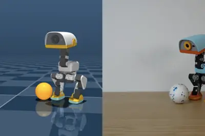
- TechOrange 科技報橘 Hugging Face 推 399 美元雙足機器人 Microduck，主打開源、可教學與自主反應
- iThome Hugging Face推出400美元雙足小機器人Microduck
要輝達不要變電所？北部電網瀕臨超載，25% 民眾錯把「歸零核能」當主力，揭開台灣電力三大真相
全球 AI 晶片霸主輝達（NVIDIA）海外總部「星群」基地落腳北投士林科技園區，成為輝達最重要的研發與製造樞 […]
- 科技新報 TechNews 要輝達不要變電所？北部電網瀕臨超載，25% 民眾錯把「歸零核能」當主力，揭開台灣電力三大真相
perceptronisaac0.5
Meta 前團隊新創 Perceptron 推出視覺 AI 模型 Isaac 0.5，讓機器人學會「看懂與思考」
由 Meta 前科學家創辦的 AI 新創公司 Perceptron，正全力將視覺人工智慧（Visual AI） […]
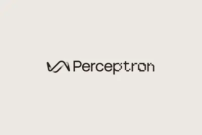
- 科技新報 TechNews Meta 前團隊新創 Perceptron 推出視覺 AI 模型 Isaac 0.5，讓機器人學會「看懂與思考」
fintech
【金融 AI 的生產力變現鴻溝】40% 機構實現獲利增長：年預算破 10 萬美元、微調自研專屬模型是關鍵
根據劍橋替代金融中心聯合世界銀行、國際貨幣基金組織、國際清算銀行，以及世界經濟論壇發佈的《2026 年全球金融服務 AI 報告》（The 2026 Global AI in Financial Services Report），全球金融業正處於中期過渡階段。 然而在此過渡期中，行業正顯現出「普及率高、獲利轉化低」的失衡反差。 全球 AI 採用率雖高達 81%，實質實現獲利增長的機構卻僅有 40%。此變現差距進一步體現在傳統與新興機構的「非對稱轉型」上：數位原生的金融科技（Fintech）不僅在成熟階段以 47% 對 30% 領先傳統機構，於全面轉型階段（
- TechOrange 科技報橘 【金融 AI 的生產力變現鴻溝】40% 機構實現獲利增長：年預算破 10 萬美元、微調自研專屬模型是關鍵
neocloudlambdadebt
Neocloud Lambda secures $1B in debt to buy more chips
Neocloud Lambda has raised $1B in private debt to buy Nvidia AI chips and lease them to Microsoft. It's the latest in a string of loans, underscoring the high cost of the AI boom.
- TechCrunch AI Neocloud Lambda secures $1B in debt to buy more chips
researchergavepeek
An Anthropic researcher just gave us a peek at self-improving AI
Given 10 benchmarks for specific misaligned behaviors, the automated systems were able to improve performance on every single one without degrading overall performance.

usb-ccableretractable
This $14 retractable USB-C cable is my secret to surviving long car rides with my kids
Talix's USB-C cable is compact and powerful enough to charge a laptop, and it's nearly 40% off.
open-weightcompaniesvalley
Open-weight AI companies are the Valley’s hottest acquisition targets
There's a lot of capital pouring into the business of giving models away.
coworkscheduledclaude
Claude Cowork排程任務教學：Scheduled Tasks如何設定？5種自動化用法一次看
Claude Cowork 的排程任務讓你把每天重複貼的那段 prompt 設定一次就好，電腦關著也照跑。但只要任務碰到本機檔案，它就會退回本機執行。
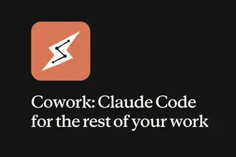
linuxstillosoffers
stillOS offers one of the best Linux onboarding experiences I've ever seen
I've experienced first steps with countless Linux distributions over the years, but this one nails every step of the way for users of all types.
codexopenai108
Codex用戶成長最快的不是工程師，是法務！OpenAI研究：企業AI正從協助走向執行
OpenAI企業數據顯示，今年2月以來Codex每週活躍企業用戶在法務職能成長108倍，工程師僅5倍。AI代理正從軟體工程外溢到一般知識工作。
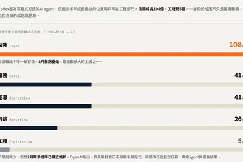
photossorteddigital
How I sorted 22,000 digital photos without getting overwhelmed: 4 easy tricks
Want to organize your photos but don't know where to start? Here are my methods for tackling a massive cloud library.
surveysdeliversame
3 surveys deliver the same uncomfortable truth about adopting agentic AI
Scaling AI in business is less about technology and more about accountability, governance, and healthy relationships between humans and agents.
dlssrtxnvngx
泄露文件催生民间开发，英伟达 DLSS 5 成功移植至 RTX 40 系列
IT之家 8 月 29 日消息，据 Tom's Hardware 今日报道，在 DLSS 5 的 nvngx_dlssnr.dll 文件泄露后，有开发者尝试将这项技术移植到更多游戏中。 此前，相关开发者已经成功让 DLSS 5 在《控制》中运行，目前又进一步扩展到了其他游戏。 此次泄露的文件来自《NBA 2K27》抢先体验版本，其中包含用于启用神经渲染功能的新文件。RenoDX Discord 社区目前成为相关移植工作的主要讨论和开发场所，开发者利用 ReShade 与 RenoDX 对相关文件进行加载，从而在其他游戏中激活神经渲染功能。 不过，当前泄露
coworkclaude
Claude Cowork內建瀏覽器怎麼用？免裝外掛，自動查資料、點擊與下載發票
Claude Cowork 內建瀏覽器上線！免裝外掛即可讓 AI 自動開網頁、填表單與蒐集資料。採獨立運行機制，保障個人隱私，大幅簡化繁瑣操作。
codexopenaicompute
OpenAI 开发“持久模式”智能体，Codex 将能够主动、长时间干活
IT之家 8 月 28 日消息，当地时间 27 日，据《连线》杂志报道，OpenAI 在开发一种更主动、能够长时间持续工作的 Codex，希望让旗舰 AI 智能体不再局限于等待用户下达任务。 《连线》检查 Codex 近期的代码变更后发现，OpenAI 近几天开始在 Codex 命令行版本中 加入“持久模式” 。Codex 命令行工具的代码改动默认公开，OpenAI 的新功能通常也会先在这里出现，之后再扩展到 Codex 桌面应用和 ChatGPT Work 等产品。 持久模式目前仍处于测试阶段，尚未大范围开放，也没有正式发布。OpenAI 发言人也已确
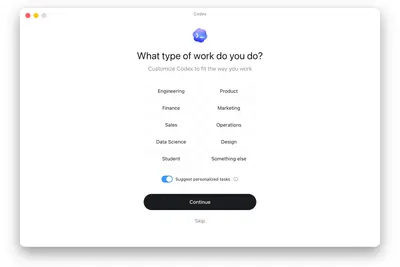
sea-lion
AI連何時會吃榴槤都懂！新加坡讓巨頭繞不過它
新加坡不拚打造全球最強AI模型，而是鎖定東南亞語言、文化，透過自建小型AI模型SEA-LION建立區域AI生態系與評測標準。
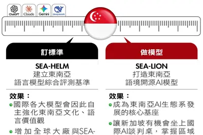
lpddr6xiaomi
长鑫存储开通微博首个关注小米手机，此前被曝是玄戒 O3 的 LPDDR6 内存核心合作伙伴
IT之家 8 月 28 日消息，长鑫存储技术有限公司开通了官方微博。IT之家注意到，该账号目前有三个关注， 其中首个关注的账号便是小米手机 。 据IT之家此前报道，本月 24 日，小米首款 AI 旗舰 SoC 玄戒 O3 今日发布， 行业首发支持 LPDDR6 。 据财联社从供应链获悉， 国内存储龙头长鑫存储是小米玄戒 O3 的 LPDDR6 内存核心合作伙伴 。早在今年 3 月，就有市场消息称，长鑫存储正在积极推进 LPDDR6 产品落地，并已向核心客户送样。今年 8 月， 多家媒体报道长鑫 LPDDR6 已接近验证尾声 。 本次随玄戒 O3 芯片落地
glassesrecordingslightly
Meta makes AI glasses slightly less creepy with limit on nonconsensual recording
Meta fixes AI glasses to stop recording any time users cover up the safety light.
max+amdpro
天钡 NEX 395 迷你主机“重新上线”：降级至 64GB 内存，无硬盘 11999 元
IT之家 8 月 28 日消息，天钡 (AOOSTAR) NEX 395 迷你主机以 64GB LPDDR5X-8533 内存配置重新上架，无硬盘版本售价 11999 元，1TB SSD 配置 12999 元。 京东 天钡 NEX395 迷你主机台式工作站 AMD 锐龙 AI Max+ 395「强大算力」 64G LPDDR5X 内存【无硬盘】 11999 元 直达链接 2026 年数码家电政府补贴持续进行中，IT 之家为大家汇总国补领券地址，买数码家电之前记得领取。 数码补贴： 点此领券 手机 / 平板 / 3C 数码支持 8.5 折政府补贴，不超过
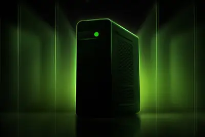
openaiapple
OpenAI 提交新请愿书，要求驳回苹果诉讼
IT之家 8 月 28 日消息，据科技媒体 MacObserver 今天报道，OpenAI 近日向法院提交申请，要求彻底驳回苹果的窃密诉讼。 OpenAI 方面表示，苹果的指控缺乏实际证据，更多是基于推测而不是确凿证据。 据IT之家了解，本起诉讼源于前苹果、现 OpenAI 员工 Chang Liu 和 Tang Tan。两人曾被苹果指控窃取商业机密，并教授新入职 OpenAI 的员工如何规避苹果安全检查。 但这两名被告表示，他们保留离职文件的理由是帮助 OpenAI 新员工遵守安全规定，并未为了获取或传播苹果商业机密。 同时 OpenAI 法律团队认为
applezdnetguessing
The best early Labor Day Costco deals 2026: TVs, smartwatches, Apple devices, and more
Summer may be ending, but Costco deals are heating up in time for Labor Day: Save big on electronics, home essentials, and more now.
ceotokencompute
美团 CEO 王兴：AI 模型和产品将用于支持主业发展，我们不会成为“Token 工厂”
IT之家 8 月 28 日消息，据新浪财经今天报道，美团 CEO 今天在公司二季度财报电话会议中表示，AI 对美团是一次组织、产品和工作流程的全面升级。 王兴表示：“我们始终认为，AI 能力的长期价值，是能否真正进入真实工作流、解决真实问题，并形成长期稳定的基础设施能力。与此同时，全国产化训练和推理能力，也帮助我们在长期成本以及基础设施可控性上建立了更强优势。” 他继续说道：“ 我们不会成为 Token 工厂 ，我们的模型和 AI 产品将用于支持我们的主业，提升用户、商户体验和公司经营效率。” IT之家注意到， 美团曾于今年 6 月末发布新一代万亿参数大
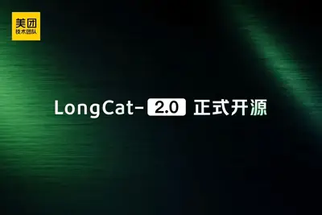
twitter.nowxaitwitter
前推特法律顾问创立“Twitter.now”，马斯克显然不太高兴
IT之家 8 月 28 日消息，前推特法律顾问近日推出“ Twitter.now ”网站，试图重塑推特此前的使用体验，并加入 AI 驱动的事实核查系统。但埃隆 · 马斯克显然对此不太高兴，其 X 平台已在法院展开阻击。 总部位于美国弗州的初创公司 Operation Bluebird 由前 Twitter 法律顾问斯蒂芬 · 科茨（IT之家注：斯蒂芬 · 科茨）创立，该公司现已推出社交网络 Twitter.now ，试图重启马斯克 2023 年收购 Twitter、更名 X 后放弃的品牌名。 斯蒂芬认为，X 实际上已经放弃了“Twitter”品牌名和元素
humandoctorsasking
AI Has Human Doctors Asking: What’s Left for Us?
A recent paper argues that AI is often better at doctoring than doctors. Guess who isn't thrilled.
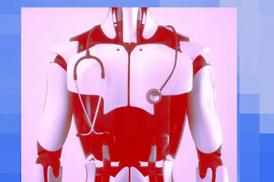
documentsappwindows
This Linux and Windows app makes managing all your documents easier
If you're a student, writer, or professional juggling documents, this app can help keep you organized.
alibaba.aitmall.aialibaba
阿里巴巴胜诉拿下 Alibaba.ai、Tmall.ai 域名，裁定被告存在恶意注册行为
IT之家 8 月 28 日消息，阿里巴巴通过统一域名争议解决政策（UDRP）程序，成功拿下 Alibaba.ai 和 Tmall.ai 两个域名。 当地时间 8 月 24 日，欧洲仲裁中心（CAC）专家组就 Alibaba.ai 与 Tmall.ai 两个域名的归属作出裁决，认定两名投资者注册和使用域名存在恶意，令其将两域名转移给阿里巴巴集团。该裁决于当地时间 8 月 27 日对外公布。 IT之家注：UDRP 是一种用于处理域名与商标权利冲突的争议解决机制，通常由仲裁小组根据域名是否与商标相同或混淆性相似、被告是否具有合法权益，以及是否存在恶意注册和使用
professionalsfirmstill
91% of professionals say their firm still falls short on AI - how to fix that
Research suggests a gap between AI ambition and on-the-ground reality, but the good news is that professionals can fill it by focusing on well-grounded explorations and solid production use cases.
roborockrobottested
I've tested dozens of robot vacuums - this new $599 Roborock has all the features I need
The Roborock Qrevo 2 Pro is a midrange robot vacuum and mop with a hands-free cleaning experience.
executiveleavessocial
Meta executive leaves for OpenAI as the social media giant faces growing scrutiny in India
Sandhya Devanathan will oversee some OpenAI operations across Southeast Asia and Australia in her new role.
migratinghttpx2url
Migrating to HTTPX2
Article URL: https://github.com/openai/openai-python/blob/main/httpx2.md Comments URL: https://news.ycombinator.com/item?id=49477212 Points: 181 # Comments: 79
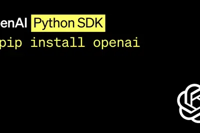
- Hacker News (100+) Migrating to HTTPX2
evencost-managementvendor
Even an AI cost-management vendor can lose control of its agent spending
In one instance, an AI agent stayed open for four days and ran 4,819 calls for almost $4,000. No one had budgeted for this cost.
omniflash1.1
Google推出Gemini Omni 1.1 Flash，靠「回看10秒」無縫延伸場景
Google發布Gemini Omni 1.1 Flash正式版，新增場景延伸、首尾影格插補；提供360p預覽及4K升頻，讓影片生成工作流更靈活。
entireways240
How to get free Google AI Pro for an entire year - and save $240: 3 ways
Google is offering its premium AI subscription plan for free. It usually costs $20 a month - and comes with many benefits.